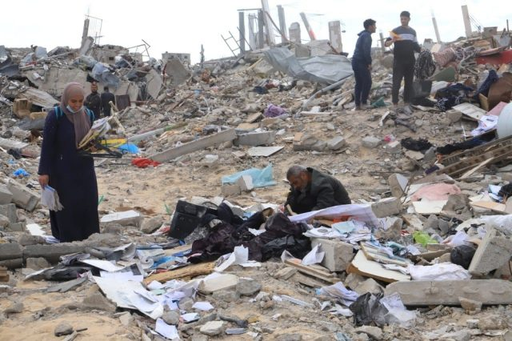
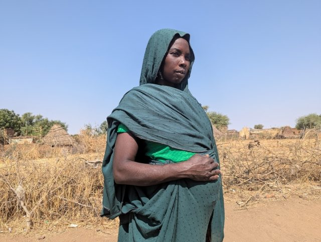
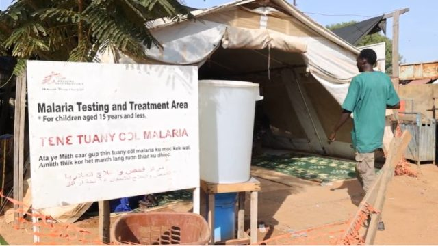
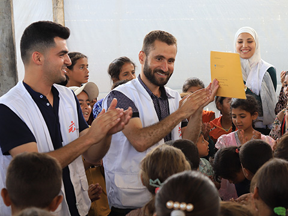

국경없는 사회란
국경없는의사회는
독립적인 국제 인도주의 의료 구호단체입니다.
무력분쟁, 전염병, 자연재해 및 의료 소외의 영향을 받는 환자에게 의료 지원을 제공합니다. 우리는 의료 윤리를 준수하며, 공정성, 독립성, 중립성의 원칙에 따라 활동합니다.
1999년 국경없는의사회는 여러 지역에서 선구적인 인도주의적 활동과 수천만 명을 치료한 의료진의 공로를 인정받아 노벨평화상을 수상했습니다.

현장
국경없는의사회(MSF)는 국제민간단체로서 주로 의사 및 의료업 종사자들로 구성되어 있으나, 단체의 목적에 기여할 수 있는 모든 분야의 전문가들에게도 열려 있다. 단체의 모든 구성원은 다음의 원칙을 지키는 데 동의한다.
- 국경없는의사회는 고난에 처하거나, 자연재해, 인재 혹은 무력 분쟁으로 고통 받는 사람들을 인종, 종교, 혹은 정치적 신념에 관계 없이 돕는다.
- 국경없는의사회는 보편적인 의료 윤리를 따르며, 누구나 인도주의적 구호를 받을 권리가 있으므로 중립성과 공정성을 준수하고, 활동을 수행하는 데 아무런 제약을 받지 않는 완전한 자유를 가져야 한다.
- 구성원들은 직업 윤리를 지켜야 하며, 어떠한 정치적, 경제적, 종교적 영향력으로부터 철저한 독립을 유지한다.
- 구성원들은 자발적으로 참여한 사람으로서 수행하는 임무의 위험성과 부담을 인지하고, 단체가 제공할 수 있는 것 외에 어떠한 보상도 요구하지 않는다.
더알아보기

팔레스타인
가자지구: 이스라엘 봉쇄 후 1개월, 주요 의료물자 동나고 있어

수단
수단: 다르푸르 임신부들이 처한 위험

남수단
남수단: 일상에 ‘평화’가 깃든다는 것

모금캠페인
국경없는의사회는 정신건강 지원